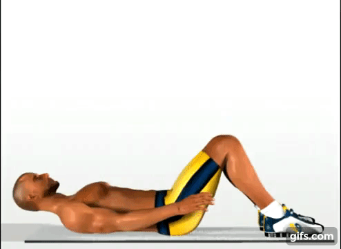

Prueba de Tren Superior
3. Abdominales
los ejercicios abdominales son rutinas de actividades físicas que se realizan con el objetivo de tonificar los músculos de la zona. Antes de la tonificación, es necesario eliminar la grasa que recubre dichos músculos, a través del ejercicio aeróbico y de una alimentación saludable. ¿Estás listo para la prueba?, VAMOS...
